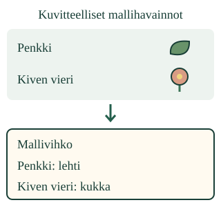

Mitä missäkin näkyi?
Aava haluaa muistaa, missä lehti ja kukka näkyivät. Miten tieto pysyy mukana, kun katsomme seuraavaa paikkaa?
Merkitsen havainnon oikean paikan kohdalle ja vertaan merkintää lähteeseen.
Havainto talteen
Katso tuttua esinettä pöydällä. Piirrä se paperille ja merkitse, missä katsoit sitä. Kuva ja lyhyt sana voivat riittää. Merkintä auttaa palaamaan siihen, mitä todella havaitsit.

Esimerkki: paikka ja asia
Ensimmäisen mallin penkillä on lehti, kiven vieressä kukka. Vihkon Penkki-riville tulee lehti. Kiven vieri -riville tulee kukka. Molemmat kuvat vihkossa eivät riitä, jos ne ovat väärien paikkojen kohdalla.
Esimerkki: havainto ja selitys
Jos tarkastelemassasi lehdessä näkyy reikä, voit kirjata “lehdessä on reikä”. “Ötökkä söi lehden” on mahdollinen selitys. Pelkkä reikä ei osoita sen tekijää. Piirrä tai merkitse se, mitä näkyy, ja pohdi selitystä erikseen.
Ansakohta: pelkkä nimi ei kerro paikkaa
Ennusta: jos vihkoon merkitään vain “lehti”, muistammeko myöhemmin, kummassa paikassa se näkyi? Näytä, mikä tieto auttaisi toista lukijaa.
Katso, merkitse, vertaa
Tämän esimerkin lähde on yllä olevan piirroksen ensimmäinen malli. Etene omaan tahtiin.
Tee harjoitusvihkon merkinnät
Harjoituksen mallihavainnot — kuvitteellinen tilanne. Kuvia ei esitetä sinun tekeminäsi oikeina retkihavaintoina.
Mallikuva pysyy näkyvissä. Katso yksi paikka kerrallaan ja valitse sen riville näkyvä asia.
Tee merkinnät ja vertaa niitä malliin.
Apua kirjaamiseen
Lue tai osoita paikan nimi. Katso sen kohdalta mallikuvan asia. Valitse sama asia vihkon riville. Tarkista lopuksi, ovatko paikka ja asia yhä yhdessä. Oikeita rivejä ei tarvitse tehdä uudelleen. Aikuinen saa lukea ohjeet.
Merkinnät säilyvät tässä harjoituksessa. Niitä ei tallenneta, kun poistut tai alustat harjoituksen.
Korjaa ja kokeile toisessa paikassa
Toisessa tilanteessa vihkon kaksi merkintää ovat valmiiksi vaihtuneet. Korjaa niitä vertaamalla mallikuvaan. Kolmannessa on kolme paikkaa. Rivien järjestys voi vaihtua: merkintä kuuluu paikan nimen kohdalle, ei aina ensimmäiseen lokeroon.
Voit jatkaa samaa vihkoa alla tai valita harjoituksen ”Toinen tilanne” -painikkeella uuden tilanteen. Näkymän avaaminen ei korjaa merkintöjä puolestasi.
Jatka omaa vihkoa tässä
Malli on ilman JavaScriptiä alkuperäisessä kohdassaan: avaa mallin kohta.
Lisätutkimus
Tutkikaa aikuisen kanssa kahta turvallista luokan paikkaa. Tehkää tyhjälle paperille oma merkintä siitä, mitä niissä oikeasti näkyy. Käyttäkää piirrosta, kuvaa tai lyhyitä sanoja. Lukekaa toistenne merkintöjä ja palatkaa lähteeseen. Älkää täyttäkö puuttuvaa havaintoa arvauksella.
Opettajalle: menettely, tuki ja rajat
Vuosiluokat 1–2. Vaadittu esitieto SCI-ENV-OBSERVE-01. Paikan ja näkyvän asian yhteys opetetaan mallissa. Lyhyiden nimien lukutuki on sallittu. Piirtämisen taitoa, muistista palauttamista tai pitkää kirjoittamista ei vaadita. Mallipaikat eivät ole väite eliöiden tavallisista elinympäristöistä.
Oppilas tekee ja korjaa merkinnät itse. Lähde pysyy nähtävissä; muistikuormaa ei käytetä kirjaamista korvaavana vaikeutena. Tarkistus vertaa malliin. Oikea tieto hyväksytään myös toisessa rivijärjestyksessä. Määrien kokoamista ja koko tutkimuksen yhdistämistä ei päätellä tästä pienestä tehtävästä.
Offline-merkinnät tehdään vasta todellisen tarkastelun yhteydessä tyhjään vihkoon. Ohjelma ei täytä niitä, havainnoi lapsen toimintaa tai tallenna henkilötietoja. Ruutu ei osoita fyysisen tutkimuksen, itsenäisen kirjaamisen tai pysyvien työtapojen hallintaa. Palaute on opetustukea, ei muodollinen koe tai mastery-merkintä.
Lopuksi
Näytä yksi vihkon merkintä ja mallikuvan kohta, johon se perustuu. Mistä toinen tietää, mitä missäkin näkyi?